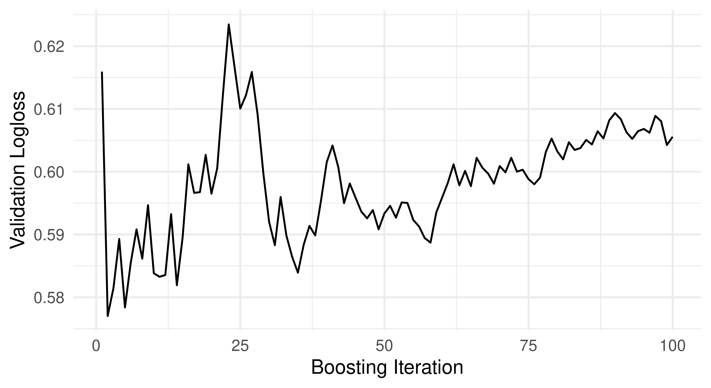
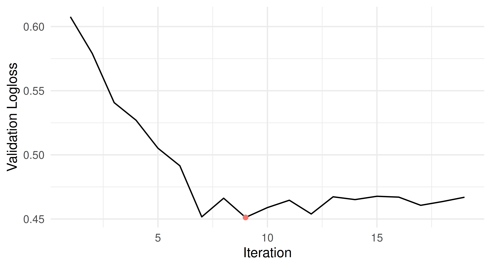
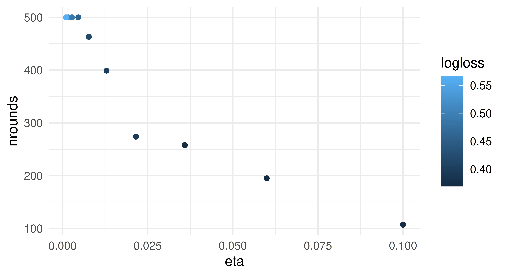

tsk_sonar = tsk("sonar")
lrn_rf = lrn("classif.ranger")
lrn_rf$train(tsk_sonar, row_ids = 4:208)
pred1 = lrn_rf$predict(tsk_sonar, row_ids = 1:3)
pred2 = lrn_rf$predict_newdata(tsk_sonar$data(1:3))Sebastian Fischer
Ludwig-Maximilians-Universität München, and Munich Center for Machine Learning (MCML)
15.1 预测集与训练误差估计
在第 3 章中，我们已经详细研究了如何训练、预测和评估许多不同的学习器（Learner）。评估一个完全训练好的模型通常需要在未见过的测试观测上做出预测。当我们直接用训练好的学习器做预测时，可以显式控制使用哪些观测：
但当使用 resample() 或 benchmark() 时，默认行为是在重采样的测试集上做预测。通过配置学习器的 $predict_sets，也可以对任务和数据的其他专门子集做出预测，即训练集和内部验证集（internal_valid）数据。我们将在接下来的小节中讨论更复杂的 internal_valid 选项。现在先来看如何在训练集上做预测。这有时对进一步分析或研究过拟合（overfitting）是有价值的。又或者我们只是出于好奇。让我们把学习器配置为同时在训练集和测试集上做预测：
lrn_rf$predict_sets = c("train", "test")
rr = resample(tsk_sonar, lrn_rf, rsmp("cv", folds = 3))在重采样过程中，学习器会在当前迭代被训练之后，对所有请求的集合产生预测。要访问它们，我们可以索取一个包含 3 个预测对象的列表（对应每个 CV 折），也可以索取整个 CV 的组合预测对象——在本例中，它包含的预测行数与任务中的观测数一样多。
str(rr$predictions("test")) # 或者 str(rr$predictions("train"))List of 3
$ :Classes 'PredictionClassif', 'Prediction', 'R6' <PredictionClassif>
$ :Classes 'PredictionClassif', 'Prediction', 'R6' <PredictionClassif>
$ :Classes 'PredictionClassif', 'Prediction', 'R6' <PredictionClassif> rr$prediction("test") # 或者 rr$prediction("train")
── <PredictionClassif> for 208 observations: ────────────────────────────
row_ids truth response
5 R M
6 R M
7 R M
--- --- ---
200 M M
203 M M
208 M M我们也可以对重采样结果的特定集合应用性能度量（Measure）：
rr$aggregate(list(
msr("classif.ce", predict_sets = "train", id = "ce_train"),
msr("classif.ce", predict_sets = "test", id = "ce_test")
))ce_train ce_test
0.0000 0.2065 度量的默认预测集通常是测试集。但我们也可以在这里请求其他集合。如果为度量请求了多个预测集，它们的预测在传入度量之前会被拼接，然后度量通常会对该集合的所有预测行计算一个汇总得分。在我们的例子中，不出所料，训练误差低于测试误差。
如果我们只想访问在训练期间计算的信息，甚至可以配置学习器完全不产生任何预测。例如，对于那些在底层实现中已经在训练期间产生泛化误差（generalization error）估计的学习器，这是有用的，比如使用袋外误差（out-of-bag error）估计或验证分数。前者只对具有 'oob_error' 属性的学习器可用，可以通过MeasureOOBError访问。后者对具有 'validation' 属性的学习器可用，实现为MeasureInternalValidScore。下面我们用随机森林的袋外误差来评估它。由于我们不需要任何预测集，可以使用ResamplingInsample，它会使用整个数据集进行训练。
lrn_rf$predict_sets = NULL
rsmp_in = rsmp("insample")
rr = resample(tsk_sonar, lrn_rf, rsmp_in)
msr_oob = msr("oob_error")
rr$aggregate(msr_oob)oob_error
0.1587 这一切对于基准测试（benchmarking）、调优（tuning）、嵌套重采样（nested resampling）以及任何在内部涉及重采样、并且我们要么生成预测、要么对其应用性能度量的过程，都以完全相同的方式工作。下面我们通过调优随机森林的 mtry.ratio 参数（使用简单的网格搜索）来说明这一点。我们不是在某个测试数据上显式做出预测并加以评估，而是用 OOB 误差来评估 mtry.ratio。这会大大加快调优过程，因为此时只需拟合一个随机森林（只需训练即可），我们就可以从这个单一模型中获取 OOB，而不必拟合多个模型。由于 OOB 观测在集成的每棵树训练期间都未被触碰，这仍然能产生有效的性能估计。
lrn_rf$param_set$set_values(
mtry.ratio = to_tune(0.1, 1)
)
ti = tune(
task = tsk_sonar,
tuner = tnr("grid_search"),
learner = lrn_rf,
resampling = rsmp_in,
measure = msr_oob,
term_evals = 10
)背景与解释（译者注）：训练误差通常远低于测试误差，因为前者是在模型已经见过的数据上计算的。两者之间的差距正是过拟合（overfitting）最直观的表现：模型记住了训练样本中的噪声，而不是学到一般规律。交叉验证（cross-validation）的核心思想，就是通过多次划分训练/测试子集，用从未参与训练的数据来估计模型的泛化误差。在本节中，mlr3 的 predict_sets 机制让你能在同一次重采样结果上同时拿到训练集与测试集的预测，便于直接对比。另外值得注意，OOB（out-of-bag，袋外）误差是随机森林等基于自助采样（bootstrap）的集成方法特有的「免费」性能估计：每棵树只由约三分之二的样本训练，未被该树使用的样本即可充当验证数据。它天然无偏且无需额外重采样，因此在某些调优场景下可以大幅节省计算成本。
15.2 验证
对于迭代式训练（许多学习器都使用），在训练过程中跟踪模型在验证数据上的性能是很有意义的。可以用于简单的日志记录或事后分析，但主要的用例是早停（early stopping）。如果模型在训练数据上的性能持续改善，但在验证数据上的性能停滞或下降，这表明过拟合，我们应该停止迭代训练。在训练过程中以在线方式处理这一点，远比从外部通过传统的、离线式的超参数调优来配置迭代次数高效得多——后者需要一遍又一遍地以不同的迭代次数重新拟合模型（并且无法利用任何有关序列进展的信息）。
背景与解释（译者注）：早停（early stopping）是迭代式学习算法（如 boosting、深度学习）中一类经典的正则化（regularization）手段。其思想朴素而有效：训练误差会随着迭代不断下降，但当模型开始记住训练集的噪声时，验证集误差反而会回升——这个拐点（此时训练误差通常仍在下降）就是应该停止迭代的时刻。传统做法是把迭代次数（如 XGBoost 的 nrounds）当作普通超参数，用交叉验证离线调优，代价是每评估一个取值都要完整重新训练一遍；而早停只需训练一次，在过程中实时监控验证指标即可，计算成本低得多。深度学习社区把「允许验证指标连续多少轮不改善」称为耐心（patience），在 XGBoost 中对应 early_stopping_rounds 参数。需要强调的是，早停要求存在一块独立的验证数据——验证集（validation set）通常从训练集中划出，与最终评估用的测试集（test set）严格区分。
在 mlr3 中，学习器可以具有 'validation' 和 'internal_tuning' 属性，以表明它们是否可以使用验证集，以及是否可以在内部优化超参数，例如通过早停。要检查给定的学习器是否支持这一点，我们只需访问它的 $properties 字段。这类学习器的例子包括 XGBoost、LightGBM、CatBoost 等 boosting 算法，以及来自mlr3torch的深度学习模型。在本节中，我们将在 sonar 上训练 XGBoost，并跟踪它在验证集上的性能。
tsk_sonar = tsk("sonar")
lrn_xgb = lrn("classif.xgboost")
lrn_xgb
── <LearnerClassifXgboost> (classif.xgboost): Extreme Gradient Boosting ─
• Model: -
• Parameters: nrounds=1000, nthread=1, verbose=0, verbosity=0,
use_pred_offset=TRUE
• Validate: NULL
• Packages: mlr3, mlr3learners, and xgboost
• Predict Types: [response] and prob
• Feature Types: logical, integer, and numeric
• Encapsulation: none (fallback: -)
• Properties: hotstart_forward, importance, internal_tuning, missings,
multiclass, offset, twoclass, validation, and weights
• Other settings: use_weights = 'use', predict_raw = 'FALSE'要启用验证，我们需要配置验证数据是如何构造的。对 XGBoost 来说有一个特殊的 watchlist 参数，但 mlr3 也通过学习器的 $validate 字段提供了一个标准化的——以及我们稍后将看到的，更强大的——接口。这个字段可以设置为：
-
NULL表示不使用验证数据（默认）， - 一个比例，表示训练数据中用作验证集的比例，
-
"predefined"表示使用任务中指定的验证数据（我们很快就会看到如何配置），以及 -
"test"表示使用测试集作为验证数据，这只能与重采样和调优结合使用。
测试数据泄漏
如果学习器的 $validate 字段设为 'test'，我们就会在训练期间泄漏重采样的测试集。如果验证分数被用于早停，这将导致有偏的性能估计。这是否可取取决于上下文：如果测试集被用来在 HPO 期间评估参数配置（即它充当验证集），这通常是可以的；然而，如果测试集的目的是提供无偏的性能估计，例如用来比较不同的学习器，那么这是不可以的。
下面，我们配置 XGBoost 学习器使用其训练数据的 \(1/3\) 进行验证：
lrn_xgb$validate = 1/3接下来，我们设置迭代次数（nrounds）以及要跟踪的度量（eval_metric），然后训练学习器。这里，来自训练任务的 \(1/3\) 的观测将专门用于验证，其余 \(2/3\) 用于训练。如果任务中启用了分层（stratification）或分组（grouping），这也会被遵守。更多细节参见第 3 章。
lrn_xgb$param_set$set_values(
nrounds = 100,
eval_metric = "logloss"
)
lrn_xgb$train(tsk_sonar)由于 XGBoost 学习器记录了验证性能的日志，我们现在可以通过 $model 槽来访问它。该信息在模型中存储的确切位置取决于具体的学习算法。对 XGBoost 而言，历史记录存储在 $evaluation_log 中：
tail(attributes(lrn_xgb$model)$evaluation_log) iter test_logloss
1: 95 0.6068
2: 96 0.6062
3: 97 0.6089
4: 98 0.6080
5: 99 0.6043
6: 100 0.6056验证损失随时间的变化在下图中可视化，x 轴是迭代次数，y 轴是验证 logloss：

mlr3 还为最终验证性能提供了一个标准化的访问器。我们可以通过 $internal_valid_scores 字段访问它，这是一个命名列表，可能包含不止一个验证度量。
lrn_xgb$internal_valid_scores$logloss
[1] 0.6056在某些情况下，人们可能希望对验证数据的构造有更多控制。例如，如果存在一个预定义的验证划分要与任务一起使用，这会很有用。这种对验证数据的细粒度控制可以通过把 validate 字段设置为 "predefined" 来实现。
lrn_xgb$validate = "predefined"这使我们能够使用训练任务中定义的 $internal_valid_task。下面，我们把验证任务设置为使用 60 个随机采样的 id，并把它们从主任务中移除。
注意，我们本可以通过简单设置 tsk_valid$internal_valid_task = valid_ids 达到同样的效果，但为了完整起见，我们展示了这种显式的方式。相关的验证任务现在有 60 个观测，主任务有 148 个：
c(tsk_sonar$internal_valid_task$nrow, tsk_sonar$nrow)[1] 60 148当我们现在训练时，学习器会在指定的附加任务上验证自己。注意，$internal_valid_task 槽总是被内部使用，即使你在 learner$validate 中设置了一个比例值，它也只是被自动构造（然后传下去）。
lrn_xgb$train(tsk_sonar)然而，在很多情况下，人们不只是训练一个单独的学习器，而是把它与其他（预处理）步骤组合在一个GraphLearner中，参见第 9 章。在 GraphLearner 中进行验证仍然是可能的，因为预处理 PipeOp 也会处理验证任务。虽然 PipeOp 的训练逻辑应用于主任务，但预测逻辑应用于验证数据。这确保了当 XGBoost 学习器在验证数据上评估其性能时没有数据泄漏。下面，我们构造一个 PipeOpPCA 并把它应用于带验证任务的 sonar 任务。
po_pca = po("pca")
taskout = po_pca$train(list(tsk_sonar))[[1]]
taskout$internal_valid_task
── <TaskClassif> (60x61): Sonar: Mines vs. Rocks ────────────────────────
• Target: Class
• Properties: twoclass
• Features (60):
• dbl (60): PC1, PC10, PC11, PC12, PC13, PC14, PC15, PC16, PC17, PC18,
PC19, PC2, PC20, PC21, PC22, PC23, PC24, PC25, PC26, PC27, PC28, PC29,
PC3, PC30, PC31, PC32, PC33, PC34, PC35, PC36, PC37, PC38, PC39, PC4,
PC40, PC41, PC42, PC43, PC44, PC45, PC46, PC47, PC48, PC49, PC5, PC50,
PC51, PC52, PC53, PC54, PC55, PC56, PC57, PC58, PC59, PC6, PC60, PC7,
PC8, PC9
• Target classes: M (positive class, 57%), R (43%)在 $train() 期间应用于 $internal_valid_task 的预处理，等价于对它做预测：
po_pca$predict(list(tsk_sonar$internal_valid_task))[[1L]]
── <TaskClassif> (60x61): Sonar: Mines vs. Rocks ────────────────────────
• Target: Class
• Properties: twoclass
• Features (60):
• dbl (60): PC1, PC10, PC11, PC12, PC13, PC14, PC15, PC16, PC17, PC18,
PC19, PC2, PC20, PC21, PC22, PC23, PC24, PC25, PC26, PC27, PC28, PC29,
PC3, PC30, PC31, PC32, PC33, PC34, PC35, PC36, PC37, PC38, PC39, PC4,
PC40, PC41, PC42, PC43, PC44, PC45, PC46, PC47, PC48, PC49, PC5, PC50,
PC51, PC52, PC53, PC54, PC55, PC56, PC57, PC58, PC59, PC6, PC60, PC7,
PC8, PC9
• Target classes: M (positive class, 57%), R (43%)这意味着跟踪验证性能即使在复杂的图学习器中也能工作，而如果简单地设置 XGBoost 的 watchlist 参数则无法做到。下面，我们把 PCA 算子与 XGBoost 链接起来，并把它转换为一个学习器。
glrn = as_learner(po_pca %>>% lrn_xgb)虽然这几乎「开箱即用」，我们现在需要在两个层面上指定 $validate 字段：
- 对
GraphLearner本身，即验证数据是在Task进入图之前如何创建的。 - 哪些具有
"validation"属性的PipeOp应该实际使用它。
这个配置可以通过使用 set_validate() 来简化。当应用于 GraphLearner 时，我们可以指定参数 validate，它决定如何创建验证数据，还可以选择指定参数 ids，它决定哪些 PipeOp 应该使用它。默认情况下，后者被设置为 Graph 的 $base_learner()，即最后一个学习器。这意味着下面两个调用是等价的：
set_validate(glrn, validate = "predefined")
set_validate(glrn, validate = "predefined", ids = "classif.xgboost")背景与解释（译者注）：在包含预处理步骤的 GraphLearner 中，验证数据也必须经过与测试数据一致的变换流程，否则就会引入数据泄漏（data leakage）。以 PCA 为例：主成分载荷（loading）必须只从训练数据中学习，然后以「预测」逻辑（即用已学到的变换直接投影）施加到验证数据上，绝不能用验证数据重新拟合 PCA。mlr3 的 PipeOp 在处理主任务时应用 $train() 逻辑，而对验证任务自动应用 $predict() 逻辑，从而保证验证性能估计不被污染。这正是 mlr3 标准化的 $validate 接口比直接设置 XGBoost 的 watchlist 更强大的原因——后者无法感知上游预处理，也就无法保证验证数据经过了正确的变换。
我们现在可以像之前一样训练图学习器，并检查最终的验证度量，它现在以相应 PipeOp 的 ID 作为前缀。
glrn$validate = "predefined"
glrn$train(tsk_sonar)
glrn$internal_valid_scores$classif.xgboost.logloss
[1] 0.5764PipeOp 的 $validate 字段
由于单个 PipeOp 无法控制验证数据是如何生成的，只能控制是否使用它，因此它们的 $validate 字段只能被设置为 NULL 或 "predefined"。这就是为什么运行 as_pipeop(lrn("classif.xgboost", validate = 0.3)) 会报错。在 GraphLearner 中使用验证时，最好先构造不指定验证数据的学习器，然后使用 set_validate()。
15.3 内部调优
XGBoost 不仅能记录它的验证性能，还能监控它以提前停止训练，即在训练期间对 nrounds 超参数执行内部调优（internal tuning）。这由 "internal_tuning" 属性标记：
"internal_tuning" %in% lrn_xgb$properties[1] TRUE背景与解释（译者注）：mlr3 把「在训练过程中由算法内部优化超参数」称为内部调优（internal tuning），以区别于借助 mlr3tuning 在重采样外部进行的离线调优。典型的例子就是早停：XGBoost 在训练中自行决定 nrounds 的最优值。内部调优与外部调优可以组合使用：外部调优器负责较「昂贵」的结构性超参数（如学习率 eta），而内部机制负责迭代次数这类在训练过程中天然可见的参数。一个需要理解的技术细节是：内部调优参数的取值要跨重采样折（fold）聚合，因为每一折训练都可能产生不同的早停迭代数——默认规则是取平均，也可在创建 to_tune() token 时自定义。此外，由于每一折的早停轮数不同，内部调优本质上是在每一折内做一次「微型验证」，因此其性能信号与最终模型的迭代数并不完全一一对应。
XGBoost 的早停可以通过指定 early_stopping_rounds 参数来启用。这也被称为耐心（patience），它指定验证损失必须连续多少轮没有改善，训练才会终止。用于早停的度量是我们传给 eval_metric 的第一个值，即 logloss。
lrn_xgb$param_set$set_values(
early_stopping_rounds = 10,
nrounds = 100
)当我们现在训练学习器时，可以通过 $internal_tuned_values 字段访问内部优化的 nrounds。
lrn_xgb$train(tsk_sonar)
lrn_xgb$internal_tuned_values$nrounds
[1] 9通过使用早停，我们能够在 19 次迭代之后就终止训练。下面，我们可视化验证损失随时间的变化，最优的 nrounds 用红色标记。我们可以看到 logloss 在 9 轮之后趋于平稳，但由于耐心设置，训练还会继续一段时间。

到目前为止，我们只使用了 XGBoost 的早停实现来优化 nrounds，还没有调优任何其他超参数。这正是mlr3发挥作用的地方，因为它允许我们把学习器的内部调优与通过mlr3tuning进行的（非内部）超参数调优结合起来。为此，我们把两个参数都设置为 to_tune()，但把 nrounds 标记为内部调优。
lrn_xgb$param_set$set_values(
eta = to_tune(0.001, 0.1, logscale = TRUE),
nrounds = to_tune(upper = 500, internal = TRUE)
)在这样的场景中，人们常常希望使用相同的验证数据来优化 eta 和 nrounds。这可以通过指定 validate 字段的 "test" 选项来实现。这意味着在每次重采样迭代中，验证数据都会被设置为测试集，即同样用于评估参数配置（以调优 eta）的数据。
lrn_xgb$validate = "test"我们现在继续用一个简单的网格搜索（10 次评估）和 3 折 CV 作为内部重采样来调优 XGBoost。在内部，这将用 10 个不同的 eta 值训练 XGBoost，而 nrounds 参数固定在 500，即上面的上界。对每个 eta 值，将执行带早停的 3 折 CV，为每个 eta 值产生 3 个（可能不同的）早停 nrounds 值。这些值根据一个聚合规则组合成单个值，该规则默认设置为取平均，但在创建内部调优 token 时可以覆盖，更多信息参见to_tune()。
当把内部调优与通过mlr3tuning进行的超参数优化结合时，我们需要指定两个性能度量：一个用于内部调优，一个用于 Tuner。因此，mlr3 要求显式设置内部调优度量，即使存在默认值。有两种方法可以为两类超参数优化使用同一个度量：
- 使用
msr("internal_valid_scores", select = <id>)，即最终的验证分数，作为调优度量。由于一个学习器可以有多个内部验证分数，该度量允许我们通过指定select参数来选择一个。如果未指定，将使用第一个验证度量。我们还需要指定该度量是否应被最小化。 - 把
eval_metric和调优度量都设置为同一个度量，例如eval_metric = "error"和measure = msr("classif.ce")。有些学习器甚至允许把验证度量设置为一个mlr3::Measure。你可以通过查看它们相应的文档来找出哪些学习器支持这一特性。其中一个例子就是 XGBoost。
使用第一个选项的优势在于可以跳过预测步骤，因为内部验证分数在训练期间已经被计算出来。从某种意义上说，这类似于在15.1 节中用 OOB 误差评估随机森林。
tsk_sonar = tsk("sonar")
lrn_xgb$predict_sets = NULL
ti = tune(
tuner = tnr("grid_search"),
learner = lrn_xgb,
task = tsk_sonar,
resampling = rsmp("cv", folds = 3),
measure = msr("internal_valid_score",
select = "logloss", minimize = TRUE),
term_evals = 10L
)
警告
当使用 GraphLearner 时，内部验证分数的名称会以相应 PipeOp 的 ID 为前缀，因此 select 参数需要被设置为 "<pipeop id>.<measure id>"。
调优结果包含为 eta 和 nrounds 两者找到的最佳配置。
ti$result_learner_param_vals[c("eta", "nrounds")]$eta
[1] 0.03594
$nrounds
[1] 258我们现在展示如何从调优存档中提取不同的参数配置。所有内部调优的参数都可以通过 $internal_tuned_values 访问。这是一个列表列，因为可以在内部调优多个参数，例如在 GraphLearner 中。下面我们提取 eta 的值（从它的对数尺度变换回来）、nrounds（内部调优）和 logloss。后者是在内部验证任务上评估的，由于我们指定了 validate = "test"，这些内部验证任务对应于 Resampling 的测试集。通过可视化结果，我们可以看到两个调优参数之间存在反比关系：较小的步长（eta）需要更多的 boosting 迭代（nrounds）。
d = ti$archive$data
d = data.table(
eta = exp(d$eta),
nrounds = unlist(d$internal_tuned_values),
logloss = d$logloss
)
ggplot(data = d, aes(x = eta, y = nrounds, color = logloss)) +
geom_point() + theme_minimal()
这也适用于一个AutoTuner，它将为最终的模型拟合同时使用内部优化的 nrounds 和离线调优的 eta。这意味着在训练最终模型时没有验证或早停，我们使用所有可用的数据。
at = auto_tuner(
tuner = tnr("grid_search"),
learner = lrn_xgb,
resampling = rsmp("cv", folds = 3),
measure = msr("internal_valid_score",
select = "logloss", minimize = TRUE),
term_evals = 10L
)
at$train(tsk_sonar)如果我们对上面的 AutoTuner 进行重采样，我们仍然会得到有效的性能估计。这是因为外部重采样的测试集从不被用作验证数据，因为最终的模型拟合不执行任何验证。超参数调优期间生成的验证数据使用内部重采样的测试集，它是外部重采样训练集的子集。
然而，在把重采样的测试集用于验证时必须小心。这是否可以接受取决于重采样的上下文和目的。如果重采样的目的是获得算法的无偏性能估计，而其中一些算法早停、另一些不早停，那么这是不可以的。在这种情况下，前者会比后者有不公平的优势。下面的例子说明了这种两个学习器之间不构成公平比较的情形。
lrn_xgb$param_set$set_values(
eta = 0.1, nrounds = 500, early_stopping_rounds = 10
)
lrn_xgb$predict_sets = "test"
design = benchmark_grid(
tsk_sonar, list(lrn_xgb, lrn("classif.rpart")), rsmp("cv", folds = 3)
)
bmr = benchmark(design)
bmr$aggregate(msr("classif.ce")) nr task_id learner_id resampling_id iters classif.ce
1: 1 sonar classif.xgboost cv 3 0.1636
2: 2 sonar classif.rpart cv 3 0.2547
Hidden columns: resample_result背景与解释（译者注）：把重采样的测试集当作验证集使用，相当于让模型在评估数据上做早停，这会形成数据泄漏。若两个学习器做公平比较——一个使用早停（因而「见过」测试集），另一个不使用——前者会获得不公平的优势，其性能估计被人为抬高。因此，validate = "test" 只适用于把测试集当作验证集来挑选超参数配置的调优场景（此时该集合的作用本就是验证集），而不适用于需要无偏性能估计的基准比较（benchmark）场景。原文上面的例子正是故意构造了一个「不公平」的对比：XGBoost 借助 classif.ce 得到 0.1636，明显优于未使用测试集信息的 classif.rpart（0.2547），但这并不能说明 XGBoost 本身更优。这也提醒我们：在报告性能时，必须明确说明数据划分与早停所用的验证数据来源。
最后，我们将介绍如何在用 ps() 函数而不是 to_tune() 机制手动指定搜索空间时启用内部调优。虽然后者更方便，因此通常被推荐，但手动定义搜索空间在参数变换方面给你更多的灵活性，参见例如4.4.3 节。我们可以把内部调优的参数包含在 search_space 中，但需要指定一个聚合函数，并把它们标记为 "internal_tuning"。
search_space = ps(
eta = p_dbl(0.001, 0.1, logscale = TRUE),
nrounds = p_int(upper = 500, tags = "internal_tuning",
aggr = function(x) as.integer(mean(unlist(x))))
)这个搜索空间可以传给 AutoTuner，优化将像之前一样进行。
at = auto_tuner(
tuner = tnr("grid_search"),
learner = lrn_xgb,
resampling = rsmp("cv", folds = 3),
measure = msr("internal_valid_score",
select = "logloss", minimize = TRUE),
search_space = search_space,
term_evals = 10L
)
at$train(tsk_sonar)背景与解释（译者注）：用 ps() 手工构造搜索空间（Search Space）与 to_tune() 机制相比更灵活，但也更繁琐。网格搜索（grid search）按参数取值的笛卡尔积逐一尝试，适合参数个数少、取值范围有限的场景；而随机搜索（random search）从参数空间中随机采样，在高维空间中往往比网格搜索更高效——网格的评估点随维度指数增长，而随机采样可以更均匀地覆盖整个空间，且在总预算固定的情况下通常能更快找到好的配置。当参数之间自然相关时（例如本节中 eta 与 nrounds 的反比关系），随机/贝叶斯式采样能够更容易地探索到「小而多轮」与「大而少轮」这类组合。手动搜索空间还允许你为内部调优参数指定自定义聚合函数（aggr），例如本节把各折早停轮数先取均值再取整。
15.4 结论
在本章中，我们首先学习了如何在不同预测集上评估机器学习方法，即训练集、内部验证集和测试集。然后我们学习了如何在验证集上跟踪一个迭代式学习过程的性能。这种技术在图学习器中也能无缝工作，唯一的区别是，你不仅要指定如何创建验证数据，还要指定哪些 PipeOp 应该使用它。此外，mlr3 的内部调优机制允许你把通过mlr3tuning进行的超参数调优与学习算法的内部调优结合起来，例如 XGBoost 的早停。
15.5 练习
在 diabetes 任务上，手动
$train()一个来自mlr3extralearners的 LightGBM 分类器，使用 \(1/3\) 的训练数据进行验证。由于 diabetes 任务有缺失值，从mlr3pipelines中选择一种方法来插补它们。显式把评估度量设置为 logloss（"binary_logloss"），最大 boosting 迭代次数设置为 1000，耐心参数设置为 10，步长设置为 0.01。训练学习器之后，检查最终的验证分数以及早停的迭代次数。把练习 1）中的学习器包装在一个
AutoTuner中，使用三折 CV 进行调优。同时把聚合不同 boosting 迭代的规则从取平均改为跨折取最大值。除了nrounds之外不要调优任何参数，这可以使用tnr("internal")来完成。使用内部验证度量作为调优度量。使用 10 折外部交叉验证，在分类准确率方面把这个学习器与一个lrn("classif.rpart")进行比较。-
考虑下面的代码：
branch_lrn = as_learner( ppl("branch", list( lrn("classif.ranger"), lrn("classif.xgboost", early_stopping_rounds = 10, eval_metric = "error", eta = to_tune(0.001, 0.1, logscale = TRUE), nrounds = to_tune(upper = 1000, internal = TRUE))))) set_validate(branch_lrn, validate = "test", ids = "classif.xgboost") branch_lrn$param_set$set_values(branch.selection = to_tune()) at = auto_tuner( tuner = tnr("grid_search"), learner = branch_lrn, resampling = rsmp("holdout", ratio = 0.8), # 不能使用内部验证分数，因为 ranger 没有这一项 measure = msr("classif.ce"), term_evals = 10L, store_models = TRUE ) tsk_sonar = tsk("sonar")$filter(1:100) rr = resample( tsk_sonar, at, rsmp("holdout", ratio = 0.8), store_models = TRUE )回答以下问题（最好在不运行代码的情况下）：
3.1 在超参数优化期间，有多少观测用于训练 XGBoost 算法（不包括验证数据），又有多少用于随机森林？提示：不能使用验证数据的学习器会忽略它。3.2 如果选择了 XGBoost，最终模型会用多少观测来训练？如果选择了随机森林呢？3.3 如果我们把图学习器的
$validate字段设为0.25而不是"test"，最后两个问题的答案会如何变化？ -
看看下面（有错误的）代码：
tsk_sonar = tsk("sonar") glrn = as_learner( po("pca") %>>% lrn("classif.xgboost", validate = 0.3) )你能解释为什么代码会失败吗？提示：xgboost 用于验证的数据应该按照训练逻辑还是预测逻辑进行预处理？
15.6 引用
请按如下方式引用本章：
Fischer S. (2024). Predict Sets, Validation and Internal Tuning (+). In Bischl B, Sonabend R, Kotthoff L, Lang M, (Eds.), Applied Machine Learning Using mlr3 in R. CRC Press. https://mlr3book.mlr-org.com/predict_sets,_validation_and_internal_tuning_(+).html.
@incollection{citekey,
author = "Sebastian Fischer",
title = "Predict Sets, Validation and Internal Tuning (+)",
booktitle = "Applied Machine Learning Using {m}lr3 in {R}",
publisher = "CRC Press", year = "2024",
editor = "Bernd Bischl and Raphael Sonabend and Lars Kotthoff and Michel Lang",
url = "https://mlr3book.mlr-org.com/predict_sets,_validation_and_internal_tuning_(+).html"
}